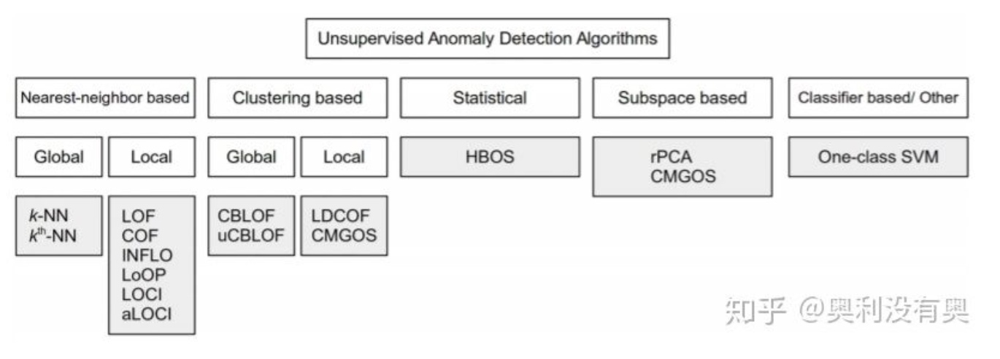
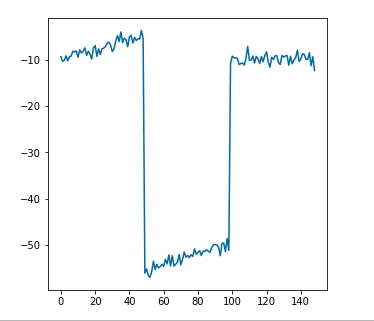
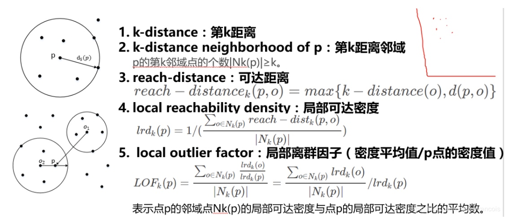
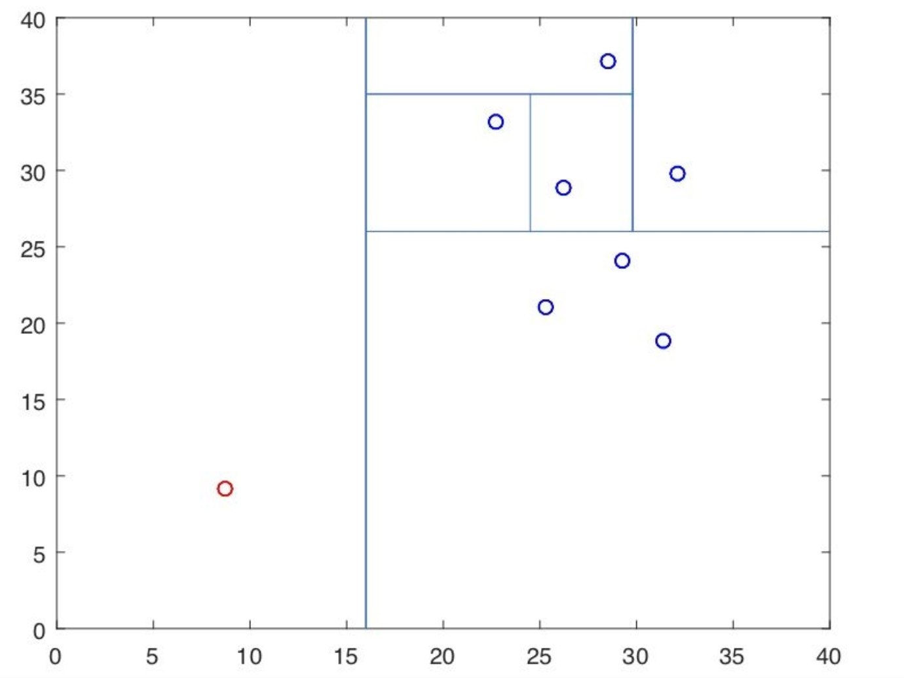
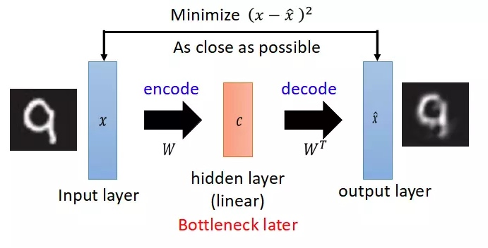

所属 Topic：机器学习 · 类型：概念
【异常检测1】无监督-多元数据#
☆☆☆https://github.com/yzhao062/anomaly-detection-resources 资料综述，包括相关工具与论文
总述：
从异常检测要检测的目的数据的不同，大致可以分为如下几类，后续会分别对这几类进行综述学习。
1. 多元特征数据，传统的n_sample x n_features形式
2. 高维数据
3. 时间序列，行为序列
4. graph, network
这里主要是介绍基于(样本x特征)的**多元特征数据的检测方法**

https://zhuanlan.zhihu.com/p/49072315
特点汇总
| 大分类 | 常用方法距离 | 特点/问题/适用范围 |
|---|---|---|
| 统计分布类 | 3sigma，四分位点， HBOS | 基于分布假定，对于分布比较极端的不太适用 |
| 低空间映射 | PCA, 协差阵 | 协差阵分布假定 |
| 基于相似度-距离 | 聚类 | 类别大小，可能会分散在很多杂类上 |
| 基于相似度-密度，角度等 | knn，LOF, COF, Isolation Forest | 相对较稳定，但是需要设置经验参数 |
| 集成方法 | feature bagging框架 | 稳定性好，效率低一些 |
1.统计与概率方法#
依据数据的分布做假定，假设大部分数据follow一个正常分布，只有很少的点不follow.
- 3sigma原则
- 四分位点
箱线图中的四分位点以及异常值, Tukey’s Test: 根据四分位点对最小值和最大值的估计分别是
$min_value = Q1 - k(Q3-Q1)$
$max_value = Q3 + k(Q3-Q1)$
$$
x_i
$$
其中k=1.5 时候可认为是中度异常，k=3时是极度异常。该方法应该假定了数据正态分布(或者是对称分布吧)
-
检测异常值Grubbs的检验（Grubbs 1969和Stefansky 1972）用于检测单变量数据集中的单个异常值，该单变量数据集遵循近似正态分布。G=max|x_i-\bar x|/s 与临界值比较。如果您怀疑可能存在多个异常值，建议您使用Tietjen-Moore测试或广义极端学生化偏差测试而不是Grubbs测试
-
HBOS- 基于直方图的检测方法
其实就是将直观看histogram的方法数量化，正常分布的直方图是比较集中的，而有异常值的分布相对来说两边会比较分散，基于此，设计的异常打分。
前提假设:多个维度中各个维度是相互独立的 这样整体分布P(x_1,...x_d)=P_1(x_1)P_2(x_2)..P_d(x_d)
对单一一个维度来说，先做出数据分布直方图 - k个等宽的bins
- 动态宽度柱状图，宽度可能不同，每个柱子里的样本数是一样的；跨度大的桶高度低，密度就小
注意:
基于统计分布的方法，其背后都是基于小概率的原理，认为超过正常分布的点就是异常值。其前提其实是认为大部分的分布都是正常的，波动只存在在小范围内。 但是如下的例子，波动其实体现在整体上，这种用统计相关的方法就不好检测了。

2. 线性模型#
假设数据在低维空间有嵌入，在低维空间投射后表现不好的即是异常点。
- PCA 大部分正常样本服从相似的分布，映射的过程中在低维的位置接近；再还原回去后计算误差，误差大的异常性高。 类似的还有非线性的auto-encoder
- 协方差矩阵：类似标准化，使用马氏距离
- OneClassSVM 无监督的SVM，划分结果是正常点和非正常点。算法的关键是寻找最优化的划分边界。正常在训练的时候是不能拿包含异常样本的，不然可能会影响boundary的选择，但是在高维的时候应该还好。
3.基于相似度(距离,密度，角度等)衡量的模型#
- 聚类
- k近邻
- 基于密度的 LOF, COF, Isolation Forest
LOF: 看一个点与周围点的密度
k近邻距离:k_distance(p),距离点p第k个最近的点的距离
可达距离:数据点p到点o的可达距离.给定参数k时候，k近邻与两点距离的最大值
reah\_dist_k(p,o)= max(k_distance(o), d(p,o))
局部可达密度：

Isolation Forest(集成的一种方法)
算法思想：异常数据相对于整个数据往往容易分开，拿平面去切的时候往往所需要的次数较少。

具体过程：
* 构建多个isolation tree，将数据切开。记录每个点的切开次数/树的高度
* 定义一个数据点的异常得分 s(x)=2^{-E(h(x))}，E(h(x))表示多次随机切分的平均高度。高度越小越容易切分，异常可能性就越高。
* 考虑点的数量进行归一化， s(x)=2^{-\frac{E(h(x))}{c(n}}, 其中c(n)表示归一化部分。
sklearn-孤立森林检测
from sklearn.ensemble import IsolationForest
clf = IsolationForest()
clf.fit(X)
scores = clf.score_samples(X)
4. 集成方法 feature bagging#
5.其他-深度学习#
- auto encoder
思路类似PCA，数据进行压缩然后再还原，只是是非线性的。异常数据还原后的误差应该较大

6.不同方法比较与如何选择问题#
https://www.zhihu.com/question/280696035/answer/438788495
- 总的看没有任何模型持续表现好。isolation forest和knn表现比较稳定
- knn模型等基于距离度量，收到数据维度影响较大，维度较低时候表现较好。数据维度较高时可以用isolation forest
- HBOS 结果不太稳定，有些表现很好，有些表现很差；主要是数据假定问题
我们如何应用#
mall场景：
- 统计粒度的： 速度、stay长时间、
- 轨迹路径的异常(x,y,t), walk变向、折返、speed突变等。 局部的变动
- 基于act sequence，整体序列的。找到一些“异常”的行为
数据层面的： 发现脏数据
工具-Pyod#
- Python异常检测工具库
Pyod，是一款专门做异常检测的python工具箱。包含大概20多种方法，其中包含深度学习以及outlier ensembles - SUOD(https://github.com/yzhao062/suod),Pyod作者的一个加速适用large-scale的异常检测工具
- sklearn https://scikit-learn.org/stable/modules/outlier_detection.html
常用的几个方法
ensemble.IsolationForest
LOF: neighbors.LocalOutlierFactor
参考#
- https://blog.csdn.net/weixin_38730719/article/details/88026338
- https://zhuanlan.zhihu.com/p/93779599
- https://www.zhihu.com/question/280696035/answer/417091151
- https://blog.csdn.net/g2v13ah/article/details/78474370
- https://www.zhihu.com/question/280696035
- https://blog.csdn.net/Jasminexjf/article/details/88527966
- ppt材料 https://zhuanlan.zhihu.com/p/30169110
- 《A comparative evaluation of outlier detection algorithms: Experiments and
analyses》